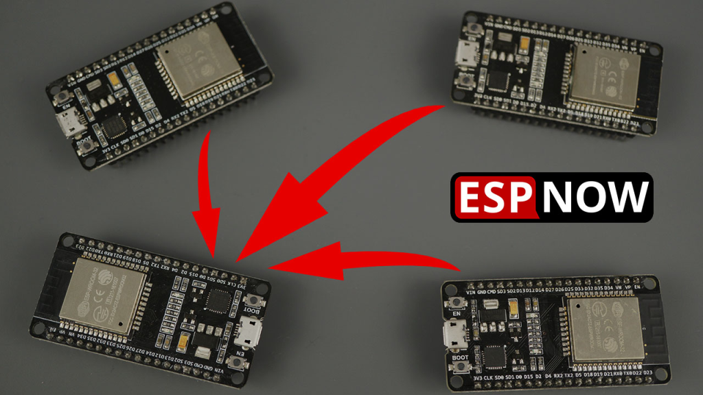

24 ESP-NOW
Here is an excellent introduction to what ESP-NOW is about. Read this.
This tutorial is heavily based on the tutorial
“Receive Data from Multiple Boards (many-to-one)”

24.1 Find what the receiver MAC address is
Download code// Complete Instructions to Get and Change ESP MAC Address: https://RandomNerdTutorials.com/get-change-esp32-esp8266-mac-address-arduino/
#ifdef ESP32
#include <WiFi.h>
#else
#include <ESP8266WiFi.h>
#endif
void setup(){
Serial.begin(115200);
Serial.println();
Serial.print("ESP Board MAC Address: ");
Serial.println(WiFi.macAddress());
}
void loop(){
}24.2 Sender code
Download code/*********
Rui Santos
Complete project details at https://RandomNerdTutorials.com/esp-now-many-to-one-esp32/
Permission is hereby granted, free of charge, to any person obtaining a copy
of this software and associated documentation files.
The above copyright notice and this permission notice shall be included in all
copies or substantial portions of the Software.
*********/
#include <esp_now.h>
#include <WiFi.h>
// REPLACE WITH THE RECEIVER'S MAC Address
// This is the slave MAC address
// 40:22:D8:66:8E:2C
// this is how you have to write it
uint8_t broadcastAddress[] = {0x40, 0x22, 0xD8, 0x66, 0x8E, 0x2C};
// Structure example to send data
// Must match the receiver structure
typedef struct struct_message {
int id; // must be unique for each sender board
int x;
int y;
} struct_message;
// Create a struct_message called myData
struct_message myData;
// Create peer interface
esp_now_peer_info_t peerInfo;
// callback when data is sent
void OnDataSent(const uint8_t *mac_addr, esp_now_send_status_t status) {
Serial.print("\r\nLast Packet Send Status:\t");
Serial.println(status == ESP_NOW_SEND_SUCCESS ? "Delivery Success" : "Delivery Fail");
}
void setup() {
// Init Serial Monitor
Serial.begin(115200);
// Set device as a Wi-Fi Station
WiFi.mode(WIFI_STA);
// Init ESP-NOW
if (esp_now_init() != ESP_OK) {
Serial.println("Error initializing ESP-NOW");
return;
}
// Once ESPNow is successfully Init, we will register for Send CB to
// get the status of Trasnmitted packet
esp_now_register_send_cb(OnDataSent);
// Register peer
memcpy(peerInfo.peer_addr, broadcastAddress, 6);
peerInfo.channel = 0;
peerInfo.encrypt = false;
// Add peer
if (esp_now_add_peer(&peerInfo) != ESP_OK){
Serial.println("Failed to add peer");
return;
}
}
void loop() {
// Set values to send
myData.id = 1;
myData.x = write here an integer number you like //random(0,50);
myData.y = write here an integer number you like //random(0,50);
// Send message via ESP-NOW
esp_err_t result = esp_now_send(broadcastAddress, (uint8_t *) &myData, sizeof(myData));
if (result == ESP_OK) {
Serial.println("Sent with success");
}
else {
Serial.println("Error sending the data");
}
delay(10000);
}24.3 Receiver code
Download code#include <esp_now.h>
#include <WiFi.h>
// Structure example to receive data
// Must match the sender structure
typedef struct struct_message {
int id;
int x;
int y;
}struct_message;
// Create a struct_message called myData
struct_message myData;
// Create a structure to hold the readings from each board
struct_message board1;
struct_message board2;
struct_message board3;
// Create an array with all the structures
struct_message boardsStruct[3] = {board1, board2, board3};
// callback function that will be executed when data is received
void OnDataRecv(const uint8_t * mac_addr, const uint8_t *incomingData, int len) {
char macStr[18];
Serial.print("Packet received from: ");
snprintf(macStr, sizeof(macStr), "%02x:%02x:%02x:%02x:%02x:%02x",
mac_addr[0], mac_addr[1], mac_addr[2], mac_addr[3], mac_addr[4], mac_addr[5]);
Serial.println(macStr);
memcpy(&myData, incomingData, sizeof(myData));
Serial.printf("Board ID %u: %u bytes\n", myData.id, len);
// Update the structures with the new incoming data
boardsStruct[myData.id-1].x = myData.x;
boardsStruct[myData.id-1].y = myData.y;
Serial.printf("x value: %d \n", boardsStruct[myData.id-1].x);
Serial.printf("y value: %d \n", boardsStruct[myData.id-1].y);
Serial.println();
}
void setup() {
//Initialize Serial Monitor
Serial.begin(115200);
//Set device as a Wi-Fi Station
WiFi.mode(WIFI_STA);
//Init ESP-NOW
if (esp_now_init() != ESP_OK) {
Serial.println("Error initializing ESP-NOW");
return;
}
// Once ESPNow is successfully Init, we will register for recv CB to
// get recv packer info
esp_now_register_recv_cb(OnDataRecv);
}
void loop() {
// Acess the variables for each board
/*int board1X = boardsStruct[0].x;
int board1Y = boardsStruct[0].y;
int board2X = boardsStruct[1].x;
int board2Y = boardsStruct[1].y;
int board3X = boardsStruct[2].x;
int board3Y = boardsStruct[2].y;*/
delay(10000);
}